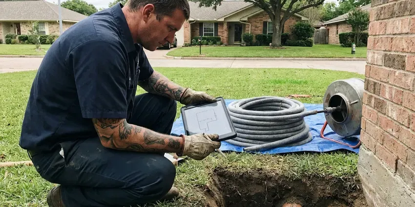

Water Leak Repair in Wilmington Manor, DE
Leaks do more damage every hour they run. GNV Plumbing finds and fixes leaks throughout Wilmington Manor, DE.
- Fast Leak Location
- Acoustic Leak Detection
- Insurance Documentation
- Licensed & Insured
Stop paying for water you never use. Fix that leak in Wilmington Manor, DE.
Licensed plumbers with detection gear are ready today.
Licensed Water Leak Repair for Wilmington Manor, DE Homes
GNV Plumbing fixes visible and hidden leaks. Plumbers in Wilmington Manor, DE track down the root cause, whether that is corrosion, a bad fitting or high pressure. Fix the leak but ignore high house pressure, and another one shows up within a year.
Some of what we do:
- Copper, PEX, CPVC and polybutylene section repairs and reroutes
- Acoustic ground microphones and thermal imaging for hidden leaks
- Slab leak reroutes and spot repairs

Additional Plumbing Repair Services in Wilmington Manor, DE
We offer expert plumbing repair services across Wilmington Manor, DE to fix leaks, restore flow, and keep your system running smoothly.


Customers
Why Choose GNV Plumbing for Water Leak Repair in Wilmington Manor, DE?
Safety and the structure of your home come first on every repair. We never cut joists past code limits, and nearby circuits get turned off before work in a wet wall. Every repair is built to code.
- Root Cause Repairs, We check water pressure and the regulator, two common causes of repeat leaks.
- Lasting Repairs, We use code-compliant materials that hold up for years.
- Insurance Friendly, Photos, findings and itemized invoices help with your claim.
Citywide Coverage
Every neighborhood in Wilmington Manor is covered by GNV Plumbing for water leak repair. Older homes and new builds are both familiar.
Experienced Team
Years of hands-on work come with the GNV Plumbing team. They handle everything from faucet drips to buried line failures.
Safety-First Approach
Code compliance comes standard on every GNV Plumbing leak repair. Work meets or exceeds local rules in Wilmington Manor, with nothing left half done.
Trusted Certified Wilmington Manor Plumbing Services Professionals
At GNV Plumbing, we are proud to offer certified plumbing services throughout Wilmington Manor, DE. Credentials matter in this trade. Our plumbers hold recognized industry credentials, and they follow strict safety and quality rules on every repair, installation and maintenance call we run.
Call Us Now PHCC Plumbing Contractor Recognition
PHCC Plumbing Contractor Recognition Better Business Bureau (BBB) Accreditation
Better Business Bureau (BBB) Accreditation Angi Certified Pro
Angi Certified Pro ISO 9001 Quality Management Certification
ISO 9001 Quality Management CertificationSlab, Wall and Yard Line Leak Repair in Wilmington Manor, DE
Emergency Leak Repair in Wilmington Manor
Inches of water on the floor can build up in minutes from a burst pipe or a broken washing machine supply line. We answer emergency calls day and night. The dispatcher can walk you through shutting the main valve while the plumber drives over, and once on site we stop the leak and make a lasting repair. We can refer a drying company.

Toilet and Faucet Leak Repair in Wilmington Manor
Toilets that run and faucets that drip waste water every hour of the day. We repair or replace washers, gaskets, O-rings and cartridges on Moen, Delta, Kohler and American Standard fixtures. We also check the water pressure. High pressure, above about 80 psi, wears out cartridges fast, and a regulator may be part of the repair.
Ceiling Leak Repair in Wilmington Manor
Ceiling stains can come from an upstairs bathroom, an attic supply line or an overflowing water heater pan, and the source is not always directly above the stain. We trace the water back. The fix might be a new tub drain seal, a toilet wax ring or an attic line repair. Sweating ducts can look like a leak, and we rule that out.
Fixture and Supply Line Leak Repair in Wilmington Manor, DE
Angle stops, faucets, toilets and braided supply lines account for a lot of household leaks. These small drips rot cabinet floors and waste hundreds of gallons. We replace worn cartridges, flappers, fill valves, shutoff valves and supply lines, and we swap old plastic supply lines for braided stainless while we are there because a burst plastic line is a common flood source. Cheap insurance.
Under-Slab Line Repair in Wilmington Manor
Lines under a concrete slab wear through where they rub on gravel or rebar, or fail from pressure and soil movement. Warm floors, a moving meter and cracked tile are typical signs. After locating it, we either open a small section of slab or reroute the line overhead. You hear the tradeoffs before work begins.
Water Heater Leak Diagnosis in Wilmington Manor, DE
Relief valve drips, leaking drain valves and loose supply fittings are the common water heater leaks, and most of them are fixable. A tank that is corroded through is not. Technicians in Wilmington Manor, DE work on tank and tankless units from Rheem, Bradford White and other brands. We check the vent and relief valve every time.
Leak Repair Cost Comparison in Wilmington Manor, DE
Fixture and supply line leaks usually cost $150 to $400 to repair. Detection is usually $200 to $500, with in-wall repairs around $300 to $900 before the patch. Slab and yard line jobs run roughly $1,000 to $4,000. Every option comes in writing.

Water Heater Leak Repair in Wilmington Manor
Water under the heater can come from the relief valve, the drain valve, a supply fitting or the tank itself. We find out which before recommending anything. Valve and fitting leaks are repairable, but a tank that is leaking from the body has reached the end and needs to be replaced. Tank and tankless both.
Water Leak Repair Nearby in Wilmington Manor, DE
Soil, water pressure and pipe materials combine differently in every neighborhood. Local plumbers find leaks faster. Then we repair them to last, using the same fitting type already in the house so the new joint matches the old system.
Searching for water leak repair near me in Wilmington Manor usually means you have already found a stain or a high bill. GNV Plumbing knows the plumbing problems common in Delaware and sends a plumber quickly. We know local building practices and pipe materials, so the leak gets found faster. Most calls are same day.
GNV Plumbing at a Glance
- Licensed and insured plumbers serving Wilmington Manor, DE
- Same-day appointments and 24/7 emergency response
- Upfront, flat-rate pricing before work begins
- 4.8-star rated by 849+ Delaware customers
Wilmington Manor Map
Wilmington Manor Information
- Population
- 8,162
- Area codes
- Local
- Service area
- Wilmington Manor and towns within a 40 mile drive
- Nearby
- New Castle, Elsmere, Wilmington, Edgemoor
Hard water, high street pressure and soil movement all feed hidden leaks in Wilmington Manor, DE homes. Catching it early saves water and drywall.
Expert Services
Reach out to GNV Plumbing for honest, reliable plumbing from people who know the trade in Wilmington Manor, DE.
Our Specialized Plumbing Services in Wilmington Manor, DE
At GNV Plumbing, you get every kind of plumbing service from one company across Wilmington Manor, DE. We go from leak detection all the way to full system installations, for homes and commercial buildings, and we do it quickly at a fair price. Explore our core services below:


Our Water Leak Repair Process in Wilmington Manor, DE
GNV Plumbing follows a clear approach on every leak repair in Wilmington Manor, DE.
Call to Schedule
Call GNV Plumbing at (302) 406-6354 to schedule a leak inspection. A few quick questions help us prepare.
Inspection
A plumber inspects your Wilmington Manor home and locates the leak source. You hear the findings in plain terms.
The Fix
The repair uses quality materials and follows Delaware plumbing code. We clean up before leaving.
Frequently Asked Questions About Water Leak Repair in Wilmington Manor
Location and pipe type drive the cost. A faucet washer or cartridge replacement in Wilmington Manor usually runs $150 to $300. A complex slab leak repair can range from $600 to $4,000 or more, depending on whether the line gets a spot repair through the floor or a full reroute overhead.
Fixing a leaky faucet or a small section of exposed pipe usually does not need a permit in Wilmington Manor. Bigger jobs like a repipe or a new main line usually need one, and we file it.
Close the main water shutoff first. Then call GNV Plumbing at (302) 406-6354 for emergency leak repair in Wilmington Manor, DE, and move valuables out of the water's path.
Turn off every fixture and watch your water meter. A moving leak indicator means water is going somewhere. High bills, warm spots on tile floors and musty odors in a closet or under a sink are other common signs of a hidden leak.
Minor leak repairs typically do not need a permit in Wilmington Manor, DE. A big main line replacement or slab-related structural work might, and we tell you before we start.
Most fixture and wall leak repairs take one to three hours. Slab and yard line repairs may take a full day, especially if a reroute is chosen.
Repeat pinholes often come from water chemistry, high pressure or thin-walled copper. Pressure gets tested, the regulator gets checked and a repipe comes up if the leaks keep coming.
Workmanship is warrantied, and materials carry manufacturer coverage. A repeat leak on the same repair gets fixed free during the warranty period.
What People Are Saying About Our Plumbing Experts?

Carlos V.
Our house still had galvanized pipe, and upstairs the shower was a trickle. The crew repiped everything in PEX over three days and patched every drywall hole before they left. The pressure difference is night and day.
Repiping · Wilmington, DE
Karen W.
After our third pinhole leak in copper, we stopped patching. GNV Plumbing gave us a written plan room by room and repiped the house in PEX while we stayed in it. The crew covered our floors every morning and cleaned up every night.
Repiping · Wilmington, DE
Lisa C.
Water was pouring out from under the washing machine on a holiday weekend. GNV Plumbing talked me through closing the valves over the phone and had a plumber at the house within ninety minutes. It was a burst fill hose.
Emergency Plumbing · Elsmere, DE
Kevin O.
Before buying our house I paid for a sewer camera inspection. GNV Plumbing found a belly in the line that held standing water about forty feet from the cleanout. We used the video to get the sellers to fix it before closing.
Sewer Camera Inspection · Wilmington, DEEmily R.
The shutoff valve under our kitchen sink snapped off in my hand on a Sunday morning. GNV Plumbing had someone out by early afternoon. He replaced both angle stops with quarter turn valves and showed me where our main shutoff was, which I honestly did not know.
Plumbing Repair · Elsmere, DEDiane F.
My kitchen faucet had dripped for months and I finally got tired of hearing it at night. GNV Plumbing came out the next morning, replaced the cartridge and the O rings, and tightened a loose base that was letting water under the sink.
Faucet Repair · Pike Creek Valley, DE